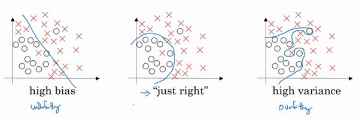

实践层面
首先说说神经网络机器学习中的问题
训练，验证，测试集
在配置训练、验证和测试数据集的过程中做出正确决策会在很大程度上帮助大家创建高效的神经网络。训练神经网络时，需要做出很多决策，例如：
- 神经网络分多少层
- 每层含有多少个隐藏单元
- 学习速率是多少
- 各层采用哪些激活函数

创建新应用的过程中，不可能从一开始就准确预测出这些信息和其他超级参数。实际上，应用型机器学习是一个 高度迭代 的过程，通常在项目启动时：
会先有一个初步想法
比如构建一个含有特定层数，隐藏单元数量或数据集个数等等的神经网络- 然后编码，并尝试运行这些代码
- 通过运行和测试得到该神经网络或这些配置信息的运行结果，可能会根据输出结果重新完善自己的想法，改变策略，或者为了找到更好的神经网络不断迭代更新自己的方案。
现如今，深度学习已经在自然语言处理，计算机视觉，语音识别以及结构化数据应用等众多领域取得巨大成功。结构化数据无所不包，从广告到网络搜索
其中网络搜索不仅包括网络搜索引擎，还包括购物网站，从所有根据搜索栏词条传输结果的网站
再到计算机安全，物流，比如判断司机去哪接送货，范围之广，不胜枚举
从一个领域或者应用领域得来的直觉经验，通常无法转移到其他应用领域，最佳决策取决于所 拥有的数据量 ，计算机配置中 输入特征的数量 ，用 GPU 训练还是 CPU ，GPU和CPU的具体配置以及其他诸多因素

目前为止，对于很多应用系统，即使是经验丰富的深度学习行家也不太可能一开始就预设出最匹配的超级参数，所以说，应用深度学习是一个典型的 迭代 过程，需要多次循环往复，才能为应用程序找到一个称心的神经网络，因此 循环该过程的效率 是决定项目进展速度的一个关键因素，而创建 高质量 的 训练数据集 ， 验证集 和 测试集 也有助于提高循环效率

假设这是 训练数据 ，用一个 长方形 表示，通常会将这些数据划分成几部分，一部分作为 训练集 ，一部分作为简单交叉验证集，有时也称之为 验证集 ，最后一部分则作为 测试集
接下来开始对训练执行算法，通过验证集或简单交叉验证集选择最好的模型，经过充分验证，选定了最终模型，然后就可以在测试集上进行评估了，为了无偏评估算法的运行状况
- 在机器学习发展的 小数据量 时代，常见做法是将所有数据三七分，就是人们常说的 70%验证集 ， 30%测试集
如果没有明确设置验证集，也可以按照 60%训练 ， 20%验证 和 20%测试集 来划分
这是前几年机器学习领域普遍认可的最好的实践方法

如果只有100条，1000条或者1万条数据，那么上述比例划分是非常合理的
但是在大数据时代，现在的数据量可能是百万级别，那么验证集和测试集占数据总量的比例会趋向于变得更小。因为验证集的目的就是验证不同的算法，检验哪种算法更有效，因此，验证集要足够大才能评估，比如2个甚至10个不同算法，并迅速判断出哪种算法更有效。可能不需要拿出20%的数据作为验证集

比如有100万条数据，那么取1万条数据便足以进行评估，找出其中表现最好的1-2种算法
同样地，根据最终选择的分类器，测试集的主要目的是正确评估分类器的性能
所以，如果拥有百万数据，只需要1000条数据，便足以评估单个分类器，并且准确评估该分类器的性能
假设有100万条数据，其中1万条作为验证集，1万条作为测试集，100万里取1万，比例是1%，即：训练集占98%，验证集和测试集各占1%
对于数据量过百万的应用，训练集可以占到99.5%，验证和测试集各占0.25%，或者验证集占0.4%，测试集占0.1%
总结一下：
- 在机器学习中，通常将样本分成训练集，验证集和测试集三部分
- 数据集规模相对较小，适用传统的划分比例
- 数据集规模较大的，验证集和测试集要小于数据总量的20%或10%
后面会给出如何划分验证集和测试集的具体指导
现代深度学习的另一个趋势是越来越多的人在 训练 和 测试集 分布不匹配 的情况下进行训练
假设要构建一个用户可以上传大量图片的应用程序，目的是找出并呈现所有猫咪图片
可能用户都是爱猫人士，训练集可能是从网上下载的猫咪图片
而验证集和测试集是用户在这个应用上上传的猫的图片
就是说，训练集可能是从网络上抓下来的图片。而验证集和测试集是用户上传的图片
结果许多网页上的猫咪图片分辨率很高，很专业，后期制作精良
而用户上传的照片可能是用手机随意拍摄的，像素低，比较模糊，这两类数据有所不同'
针对这种情况，根据经验，建议大家要确保验证集和测试集的数据来自同一分布
要用验证集来评估不同的模型，尽可能地优化性能。如果验证集和测试集来自同一个分布就会很好

但由于深度学习算法需要大量的训练数据，为了获取更大规模的训练数据集，可以采用当前流行的各种创意策略
例如，网页抓取，代价就是训练集数据与验证集和测试集数据有可能不是来自同一分布
但只要遵循这个经验法则，就会发现机器学习算法会变得更快
最后一点，就算没有测试集也不要紧，测试集的目的是对最终所选定的神经网络系统做出无偏估计，如果不需要无偏估计，也可以不设置测试集。所以如果只有验证集，没有测试集，我们要做的就是，在训练集上训练，尝试不同的模型框架，在验证集上评估这些模型，然后迭代并选出适用的模型。因为验证集中已经涵盖测试集数据，其不再提供无偏性能评估。当然，如果你不需要无偏估计，那就再好不过了

在机器学习中，如果只有一个训练集和一个验证集，而没有独立的测试集，遇到这种情况，训练集还被人们称为训练集，而验证集则被称为测试集，不过在实际应用中，人们只是把测试集当成简单交叉验证集使用，并没有完全实现该术语的功能，因为他们把验证集数据过度拟合到了测试集中
如果某团队跟你说他们只设置了一个训练集和一个测试集，需要很谨慎
是不是真的有训练验证集，因为他们把验证集数据过度拟合到了测试集中
让这些团队改变叫法，改称其为“训练验证集”，而不是“训练测试集”，可能不太容易
即便认为“训练验证集“在专业用词上更准确
实际上，如果不需要无偏评估算法性能，那么这样是可以的

搭建训练验证集和测试集能够加速神经网络的集成，也可以更有效地衡量算法地偏差和方差
从而帮助更高效地选择合适方法来优化算法
偏差，方差
几乎所有机器学习从业人员都期望深刻理解偏差和方差，这两个概念易学难精
即使自己认为已经理解了偏差和方差的基本概念，却总有一些意想不到的新东西出现
关于深度学习的误差问题，另一个趋势是对偏差和方差的权衡研究甚浅，
可能听说过这两个概念，但深度学习的误差很少权衡二者，总是分别考虑偏差和方差，却很少谈及偏差和方差的权衡问题

假设这就是数据集：
- 如果给这个数据集拟合一条直线，可能得到一个逻辑回归拟合，但它并不能很好地拟合该数据，这是 高偏差 high bias 的情况，称为 欠拟合 underfitting
相反的如果拟合一个非常复杂的分类器，但这看起来也不是一种很好的拟合方式分类器 方差较高 high variance ，数据 过度拟合 overfitting
比如深度神经网络或含有隐藏单元的神经网络，可能就非常适用于这个数据集- 在两者之间，可能还有一些像图中这样的，复杂程度适中，数据拟合适度的分类器，这个数据拟合看起来更加合理，称之为 适度拟合 just right 是介于过度拟合和欠拟合中间的一类

在这样一个只有 \(x_1\) 和 \(x_2\) 两个特征的二维数据集中，可以绘制数据，将偏差和方差可视化。在多维空间数据中，绘制数据和可视化分割边界无法实现，但可以通过几个指标，来研究偏差和方差

沿用猫咪图片分类这个例子，左边一张是猫咪图片，右边一张不是。理解偏差和方差的两个关键数据是 训练集误差 Train set error 和 验证集误差 Dev set error
为了方便论证，假设可以辨别图片中的小猫，用肉眼识别几乎是不会出错的
假定训练集误差是1%，为了方便论证，假定验证集误差是11%，可以看出训练集设置得非常好，而验证集设置相对较差，可能过度拟合了训练集，在某种程度上，验证集并没有充分利用交叉验证集的作用，像这种情况，称之为 高方差
通过查看训练集误差和验证集误差，便可以诊断算法是否具有高方差
也就是说衡量训练集和验证集误差就可以得出不同结论
假设训练集误差是15%，把训练集误差写在首行，验证集误差是16%，假设该案例中人的错误率几乎为0%，人们浏览这些图片，分辨出是不是猫。算法并没有在训练集中得到很好训练，如果训练数据的拟合度不高，就是数据欠拟合，就可以说这种算法 偏差比较高 。相反，它对于验证集产生的结果却是合理的，验证集中的错误率只比训练集的多了1%，所以这种算法偏差高，因为它甚至不能拟合训练集
再举一个例子，训练集误差是15%，偏差相当高，但是，验证集的评估结果更糟糕，错误率达到30%，在这种情况下，我会认为这种算法偏差高，因为它在训练集上结果不理想，而且方差也很高，这是 方差偏差都很糟糕 的情况。
最后一个例子，训练集误差是0.5%，验证集误差是1%，用户看到这样的结果会很开心，猫咪分类器只有1%的错误率， 偏差和方差都很低
这些分析都是基于假设预测的，假设人眼辨别的错误率接近0%
一般来说，最优误差也被称为贝叶斯误差，所以，最优误差接近0%
如果最优误差或贝叶斯误差非常高，比如15%。再看看这个分类器（训练误差15%，验证误差16%），15%的错误率对训练集来说也是非常合理的，偏差不高，方差也非常低

当所有分类器都不适用时，如何分析偏差和方差呢？
比如，图片很模糊，即使是人眼，或者没有系统可以准确无误地识别图片
在这种情况下，最优误差会更高，那么分析过程就要做些改变了：
- 重点是通过查看训练集误差，可以判断数据拟合情况，至少对于训练数据是这样，可以判断是否有偏差问题，然后查看错误率有多高
- 当完成训练集训练，开始使用验证集验证时，可以判断方差是否过高，从训练集到验证集的这个过程中，可以判断方差是否过高

以上分析的前提都是假设基本误差很小，训练集和验证集数据来自相同分布
如果没有这些假设作为前提，分析过程更加复杂，接下来将会讨论
偏差和方差都高是什么样子呢？这种情况对于两个衡量标准来说都是非常糟糕的

这样的分类器，会产生高偏差，因为它的数据拟合度低，像这种接近线性的分类器，数据拟合度低

但是如果稍微改变一下分类器，这里用紫色笔画出，它会过度拟合部分数据，用紫色线画出的分类器具有高偏差和高方差，偏差高是因为它几乎是一条线性分类器，并未拟合数据

这种二次曲线能够很好地拟合数据：

这条曲线中间部分灵活性非常高，却过度拟合了这两个样本，这类分类器偏差很高，因为它几乎是线性的

而采用曲线函数或二次元函数会产生高方差，因为它曲线灵活性太高以致拟合了这两个错误样本和中间这些活跃数据
这看起来有些不自然，从两个维度上看都不太自然
但对于高维数据，有些数据区域偏差高，有些数据区域方差高
所以在高维数据中采用这种分类器看起来就不会那么牵强了
总结一下：
- 如何通过分析在训练集上训练算法产生的误差和验证集上验证算法产生的误差来诊断算法是否存在高偏差和高方差，是否两个值都高，或者两个值都不高
- 根据算法偏差和方差的具体情况决定接下来你要做的工作
接下来会根据算法偏差和方差的高低情况讲解一些机器学习的基本方法，更系统地优化算法